Using mixture models
Statistical Programming using R
For mixture models clustering, we use the following packages:
library(mclust)
library(Rmixmod)
# We also need
library(ggplot2)Package mclust
Direct clustering
In this package, the function mclustBIC() computes the \(EM\) algorithm for many values of number of clusters (with G parameter, between 1 and 9 by default) and models (with modelNames parameter, all available models by default). It uses \(BIC\) criterion to choose the best model.
mBIC = mclustBIC(iris[-5])
summary(mBIC)## Best BIC values:
## VEV,2 VEV,3 VVV,2
## BIC -561.7285 -562.5514380 -574.01783
## BIC diff 0.0000 -0.8229759 -12.28937plot(mBIC)
Now, we apply Mclust() function to get the results of the best model.
mBIC1 = Mclust(iris[-5], x = mBIC)
summary(mBIC1, parameters = TRUE)## ----------------------------------------------------
## Gaussian finite mixture model fitted by EM algorithm
## ----------------------------------------------------
##
## Mclust VEV (ellipsoidal, equal shape) model with 2 components:
##
## log.likelihood n df BIC ICL
## -215.726 150 26 -561.7285 -561.7289
##
## Clustering table:
## 1 2
## 50 100
##
## Mixing probabilities:
## 1 2
## 0.333332 0.666668
##
## Means:
## [,1] [,2]
## Sepal.Length 5.0060021 6.261996
## Sepal.Width 3.4280046 2.871999
## Petal.Length 1.4620006 4.905993
## Petal.Width 0.2459998 1.675997
##
## Variances:
## [,,1]
## Sepal.Length Sepal.Width Petal.Length Petal.Width
## Sepal.Length 0.15065097 0.13080108 0.020844624 0.013091029
## Sepal.Width 0.13080108 0.17604544 0.016032479 0.012214539
## Petal.Length 0.02084462 0.01603248 0.028082603 0.006015675
## Petal.Width 0.01309103 0.01221454 0.006015675 0.010423651
## [,,2]
## Sepal.Length Sepal.Width Petal.Length Petal.Width
## Sepal.Length 0.4000437 0.10865439 0.3994013 0.14368238
## Sepal.Width 0.1086544 0.10928074 0.1238902 0.07284378
## Petal.Length 0.3994013 0.12389025 0.6109012 0.25738947
## Petal.Width 0.1436824 0.07284378 0.2573895 0.16808166table(mBIC1$classification)##
## 1 2
## 50 100t(mBIC1$parameters$mean)## Sepal.Length Sepal.Width Petal.Length Petal.Width
## [1,] 5.006002 3.428005 1.462001 0.2459998
## [2,] 6.261996 2.871999 4.905993 1.6759972plot(mBIC1, what = "classification")
plot(mBIC1, what = "uncertainty")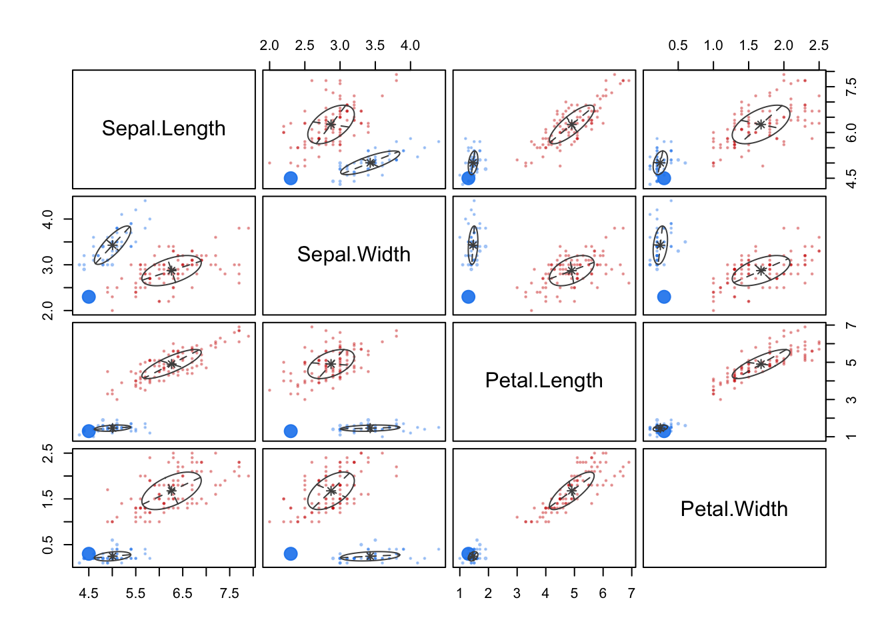
plot(mBIC1, what = "density")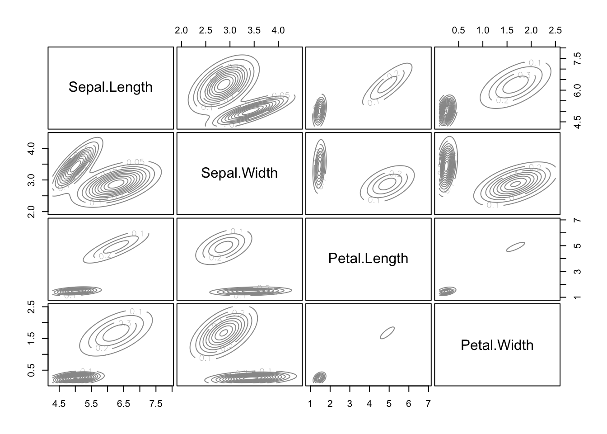
table(iris$Species, mBIC1$classification)##
## 1 2
## setosa 50 0
## versicolor 0 50
## virginica 0 50We see that the same model with 3 clusters is the second choice.
mBIC2 = Mclust(iris[-5], G = 3, modelNames = "VEV")
table(mBIC2$classification)##
## 1 2 3
## 50 45 55t(mBIC2$parameters$mean)## Sepal.Length Sepal.Width Petal.Length Petal.Width
## [1,] 5.006000 3.428000 1.462000 0.246000
## [2,] 5.914717 2.777559 4.203528 1.298712
## [3,] 6.546545 2.949380 5.481568 1.985130plot(mBIC2, what = "classification")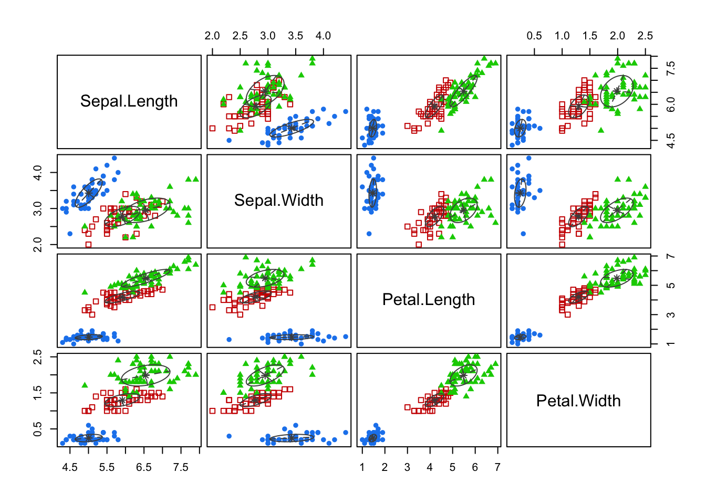
table(iris$Species, mBIC2$classification)##
## 1 2 3
## setosa 50 0 0
## versicolor 0 45 5
## virginica 0 0 50If you prefer use the \(ICL\) criterion, you can apply the mclustICL() function.
mICL = mclustICL(iris[-5])
summary(mICL)## Best ICL values:
## VEV,2 VEV,3 VVV,2
## ICL -561.7289 -566.45770 -574.01910
## ICL diff 0.0000 -4.72882 -12.29022plot(mICL)
Now, we apply Mclust() function to get the results of the best model. But, we have to indicate manually the number of clusters and the model to use in the Mclust() function.
mICL1 = Mclust(iris[-5],
G = 2,
modelNames = "VEV")
summary(mICL1, parameters = TRUE)## ----------------------------------------------------
## Gaussian finite mixture model fitted by EM algorithm
## ----------------------------------------------------
##
## Mclust VEV (ellipsoidal, equal shape) model with 2 components:
##
## log.likelihood n df BIC ICL
## -215.726 150 26 -561.7285 -561.7289
##
## Clustering table:
## 1 2
## 50 100
##
## Mixing probabilities:
## 1 2
## 0.333332 0.666668
##
## Means:
## [,1] [,2]
## Sepal.Length 5.0060021 6.261996
## Sepal.Width 3.4280046 2.871999
## Petal.Length 1.4620006 4.905993
## Petal.Width 0.2459998 1.675997
##
## Variances:
## [,,1]
## Sepal.Length Sepal.Width Petal.Length Petal.Width
## Sepal.Length 0.15065097 0.13080108 0.020844624 0.013091029
## Sepal.Width 0.13080108 0.17604544 0.016032479 0.012214539
## Petal.Length 0.02084462 0.01603248 0.028082603 0.006015675
## Petal.Width 0.01309103 0.01221454 0.006015675 0.010423651
## [,,2]
## Sepal.Length Sepal.Width Petal.Length Petal.Width
## Sepal.Length 0.4000437 0.10865439 0.3994013 0.14368238
## Sepal.Width 0.1086544 0.10928074 0.1238902 0.07284378
## Petal.Length 0.3994013 0.12389025 0.6109012 0.25738947
## Petal.Width 0.1436824 0.07284378 0.2573895 0.16808166table(mICL1$classification)##
## 1 2
## 50 100t(mICL1$parameters$mean)## Sepal.Length Sepal.Width Petal.Length Petal.Width
## [1,] 5.006002 3.428005 1.462001 0.2459998
## [2,] 6.261996 2.871999 4.905993 1.6759972plot(mICL1, what = "classification")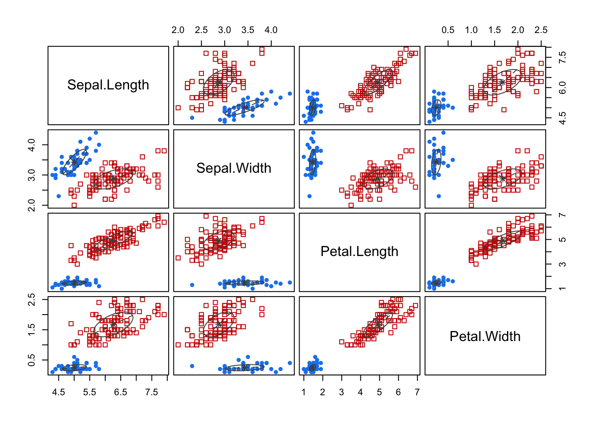
table(iris$Species, mICL1$classification)##
## 1 2
## setosa 50 0
## versicolor 0 50
## virginica 0 50We can also compute some other criteria, such as \(AIC\) and \(AIC3\).
G = attr(mBIC, "G")
modelNames = attr(mBIC, "modelNames")
d = attr(mBIC, "d")
criterion = data.frame(G = rep(G, length(modelNames)),
model = rep(modelNames, each = length(G)),
AIC = NA,
AIC3 = NA,
stringsAsFactors = FALSE)
for (i in 1:nrow(criterion)) {
m = Mclust(iris[-5], G = criterion$G[i],
modelNames = criterion$model[i])
p = nMclustParams(criterion$model[i], d, criterion$G[i])
criterion[i, "AIC"] = -2 * m$loglik + 2 * p
criterion[i, "AIC3"] = -2 * m$loglik + 3 * p
}
head(criterion[order(criterion$AIC),], 3)## G model AIC AIC3
## 124 7 VVV 415.4447 519.4447
## 107 8 VEV 429.1328 527.1328
## 126 9 VVV 432.4844 566.4844ggplot(criterion, aes(G, AIC, color = model)) +
geom_line() +
scale_x_discrete(limits = G)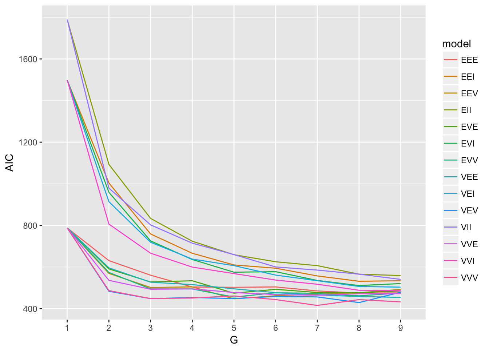
head(criterion[order(criterion$AIC3),], 3)## G model AIC AIC3
## 102 3 VEV 448.1473 486.1473
## 120 3 VVV 448.3719 492.3719
## 103 4 VEV 453.3948 503.3948ggplot(criterion, aes(G, AIC3, color = model)) +
geom_line() +
scale_x_discrete(limits = G)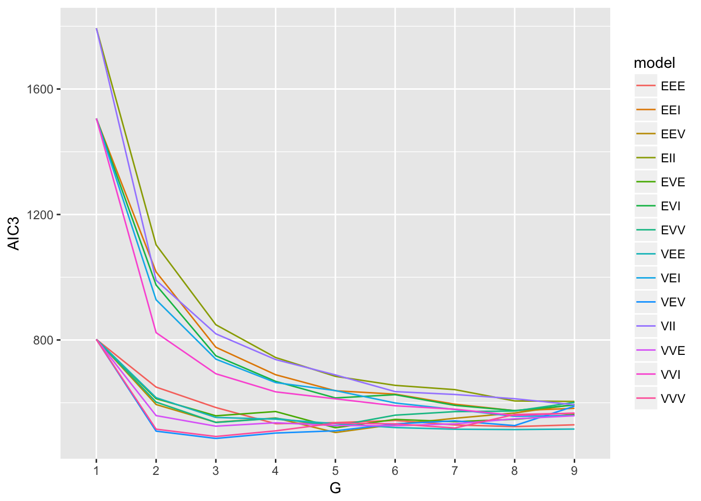
Hierarchical clustering
This package also contains the hc() function, computing a model-based hierarchical clustering. You have to specify the model to use.
hm = hc(iris[-5], "VVV")
hm2 = hclass(hm, 2)
clPairs(iris[-5], cl = hm2)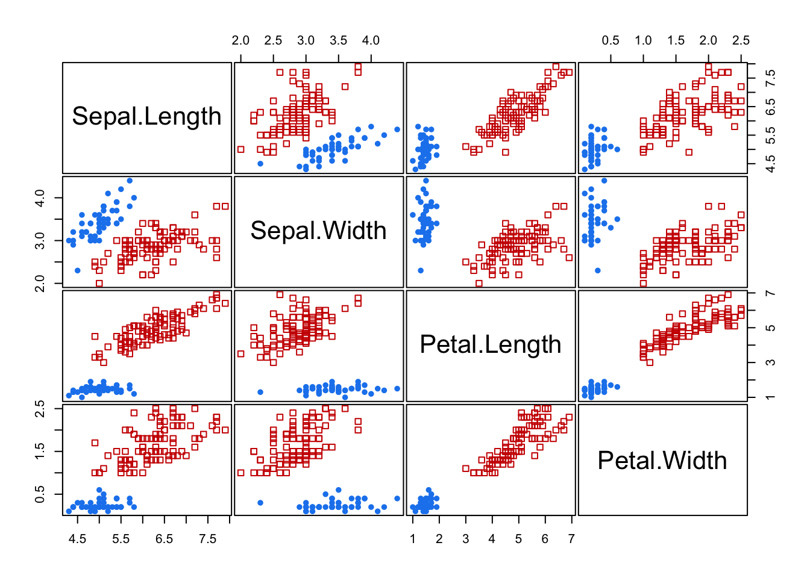
table(iris$Species, hm2)## hm2
## 1 2
## setosa 50 0
## versicolor 0 50
## virginica 0 50hm3 = hclass(hm, 3)
clPairs(iris[-5], cl = hm3)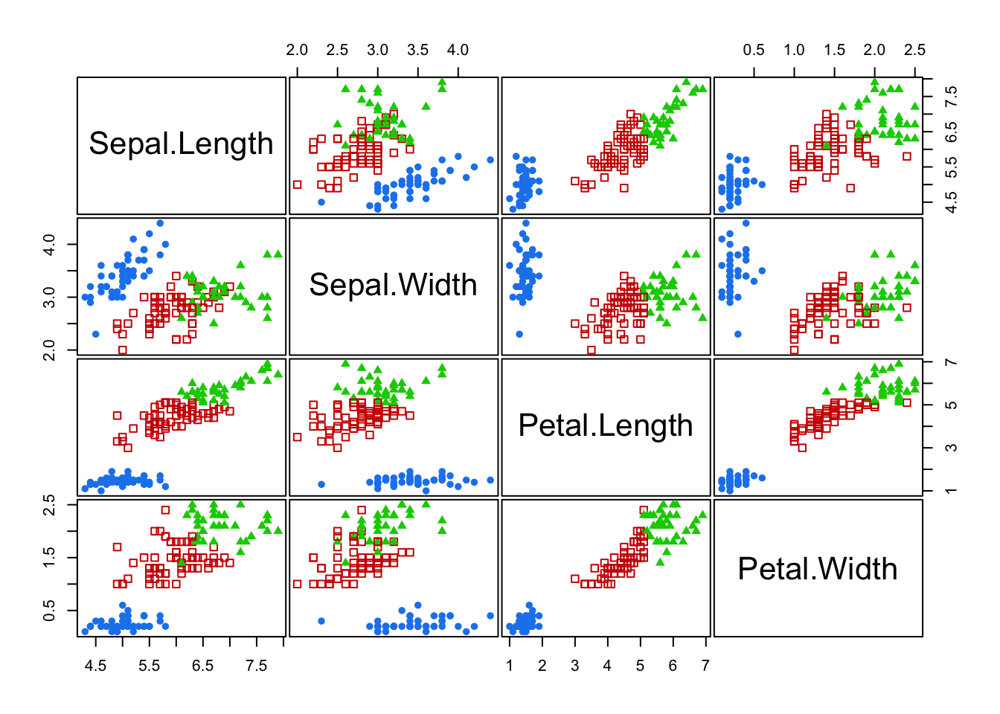
table(iris$Species, hm3)## hm3
## 1 2 3
## setosa 50 0 0
## versicolor 0 50 0
## virginica 0 14 36Package Rmixmod
In this package, the function mixmodCluster() apply the \(EM\) algorithm (initialized by \(smallEM\)), with many values of number of clusters (with nbClusterparameter, without default value) and models (with models parameter, "Gaussian_pk_Lk_C" by default). It uses by default the \(BIC\) criterion.
mixmodBIC = mixmodCluster(iris[-5], 1:9)
mixmodBIC## ****************************************
## *** INPUT:
## ****************************************
## * nbCluster = 1 2 3 4 5 6 7 8 9
## * criterion = BIC
## ****************************************
## *** MIXMOD Models:
## * list = Gaussian_pk_Lk_C
## * This list includes only models with free proportions.
## ****************************************
## * data (limited to a 10x10 matrix) =
## Sepal.Length Sepal.Width Petal.Length Petal.Width
## [1,] 5.1 3.5 1.4 0.2
## [2,] 4.9 3 1.4 0.2
## [3,] 4.7 3.2 1.3 0.2
## [4,] 4.6 3.1 1.5 0.2
## [5,] 5 3.6 1.4 0.2
## [6,] 5.4 3.9 1.7 0.4
## [7,] 4.6 3.4 1.4 0.3
## [8,] 5 3.4 1.5 0.2
## [9,] 4.4 2.9 1.4 0.2
## [10,] 4.9 3.1 1.5 0.1
## * ... ...
## ****************************************
## *** MIXMOD Strategy:
## * algorithm = EM
## * number of tries = 1
## * number of iterations = 200
## * epsilon = 0.001
## *** Initialization strategy:
## * algorithm = smallEM
## * number of tries = 10
## * number of iterations = 5
## * epsilon = 0.001
## * seed = NULL
## ****************************************
##
##
## ****************************************
## *** BEST MODEL OUTPUT:
## *** According to the BIC criterion
## ****************************************
## * nbCluster = 4
## * model name = Gaussian_pk_Lk_C
## * criterion = BIC(602.9206)
## * likelihood = -221.2901
## ****************************************
## *** Cluster 1
## * proportion = 0.3571
## * means = 6.5530 2.9639 5.5016 1.9988
## * variances = | 0.3843 0.1305 0.2383 0.0635 |
## | 0.1305 0.1718 0.0925 0.0496 |
## | 0.2383 0.0925 0.2668 0.0669 |
## | 0.0635 0.0496 0.0669 0.0605 |
## *** Cluster 2
## * proportion = 0.1402
## * means = 5.2584 3.7404 1.4479 0.2529
## * variances = | 0.1224 0.0416 0.0759 0.0202 |
## | 0.0416 0.0547 0.0295 0.0158 |
## | 0.0759 0.0295 0.0850 0.0213 |
## | 0.0202 0.0158 0.0213 0.0193 |
## *** Cluster 3
## * proportion = 0.3096
## * means = 5.9264 2.7660 4.2190 1.3037
## * variances = | 0.2038 0.0692 0.1264 0.0337 |
## | 0.0692 0.0911 0.0490 0.0263 |
## | 0.1264 0.0490 0.1415 0.0355 |
## | 0.0337 0.0263 0.0355 0.0321 |
## *** Cluster 4
## * proportion = 0.1931
## * means = 4.8227 3.2012 1.4723 0.2410
## * variances = | 0.1066 0.0362 0.0661 0.0176 |
## | 0.0362 0.0476 0.0256 0.0138 |
## | 0.0661 0.0256 0.0740 0.0186 |
## | 0.0176 0.0138 0.0186 0.0168 |
## ****************************************summary(mixmodBIC)## **************************************************************
## * Number of samples = 150
## * Problem dimension = 4
## **************************************************************
## * Number of cluster = 4
## * Model Type = Gaussian_pk_Lk_C
## * Criterion = BIC(602.9206)
## * Parameters = list by cluster
## * Cluster 1 :
## Proportion = 0.3571
## Means = 6.5530 2.9639 5.5016 1.9988
## Variances = | 0.3843 0.1305 0.2383 0.0635 |
## | 0.1305 0.1718 0.0925 0.0496 |
## | 0.2383 0.0925 0.2668 0.0669 |
## | 0.0635 0.0496 0.0669 0.0605 |
## * Cluster 2 :
## Proportion = 0.1402
## Means = 5.2584 3.7404 1.4479 0.2529
## Variances = | 0.1224 0.0416 0.0759 0.0202 |
## | 0.0416 0.0547 0.0295 0.0158 |
## | 0.0759 0.0295 0.0850 0.0213 |
## | 0.0202 0.0158 0.0213 0.0193 |
## * Cluster 3 :
## Proportion = 0.3096
## Means = 5.9264 2.7660 4.2190 1.3037
## Variances = | 0.2038 0.0692 0.1264 0.0337 |
## | 0.0692 0.0911 0.0490 0.0263 |
## | 0.1264 0.0490 0.1415 0.0355 |
## | 0.0337 0.0263 0.0355 0.0321 |
## * Cluster 4 :
## Proportion = 0.1931
## Means = 4.8227 3.2012 1.4723 0.2410
## Variances = | 0.1066 0.0362 0.0661 0.0176 |
## | 0.0362 0.0476 0.0256 0.0138 |
## | 0.0661 0.0256 0.0740 0.0186 |
## | 0.0176 0.0138 0.0186 0.0168 |
## * Log-likelihood = -221.2901
## **************************************************************plot(mixmodBIC)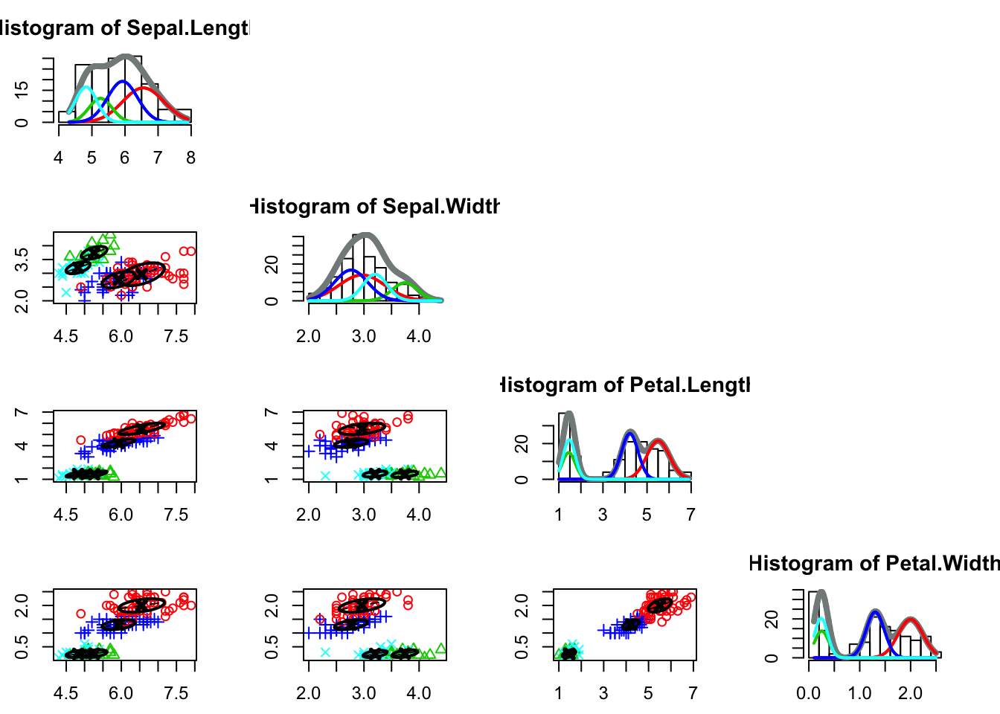
hist(mixmodBIC)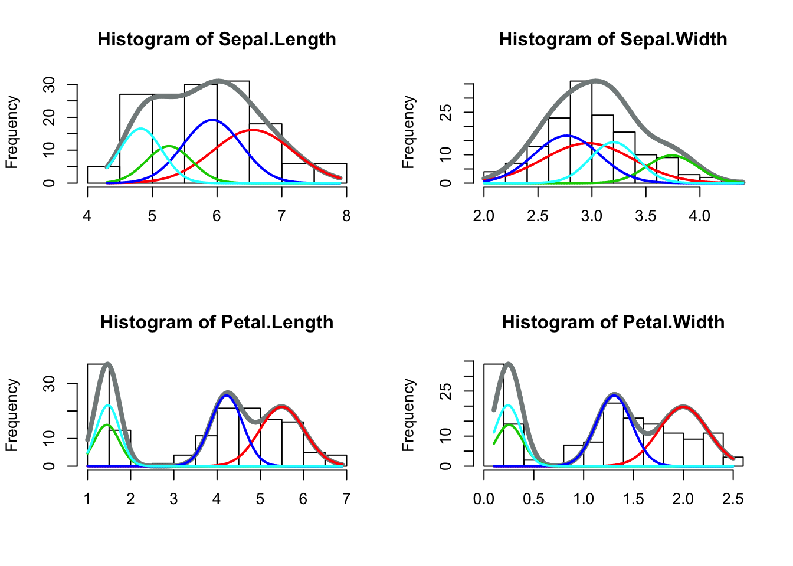
If you want to use \(ICL\) criterion, or even \(NEC\), you have to specify it with the criterion parameter.
mixmodICL = mixmodCluster(iris[-5], 1:9, criterion = "ICL")
mixmodICL## ****************************************
## *** INPUT:
## ****************************************
## * nbCluster = 1 2 3 4 5 6 7 8 9
## * criterion = ICL
## ****************************************
## *** MIXMOD Models:
## * list = Gaussian_pk_Lk_C
## * This list includes only models with free proportions.
## ****************************************
## * data (limited to a 10x10 matrix) =
## Sepal.Length Sepal.Width Petal.Length Petal.Width
## [1,] 5.1 3.5 1.4 0.2
## [2,] 4.9 3 1.4 0.2
## [3,] 4.7 3.2 1.3 0.2
## [4,] 4.6 3.1 1.5 0.2
## [5,] 5 3.6 1.4 0.2
## [6,] 5.4 3.9 1.7 0.4
## [7,] 4.6 3.4 1.4 0.3
## [8,] 5 3.4 1.5 0.2
## [9,] 4.4 2.9 1.4 0.2
## [10,] 4.9 3.1 1.5 0.1
## * ... ...
## ****************************************
## *** MIXMOD Strategy:
## * algorithm = EM
## * number of tries = 1
## * number of iterations = 200
## * epsilon = 0.001
## *** Initialization strategy:
## * algorithm = smallEM
## * number of tries = 10
## * number of iterations = 5
## * epsilon = 0.001
## * seed = NULL
## ****************************************
##
##
## ****************************************
## *** BEST MODEL OUTPUT:
## *** According to the ICL criterion
## ****************************************
## * nbCluster = 4
## * model name = Gaussian_pk_Lk_C
## * criterion = ICL(612.7233)
## * likelihood = -216.7612
## ****************************************
## *** Cluster 1
## * proportion = 0.3365
## * means = 5.9442 2.7560 4.2719 1.3249
## * variances = | 0.2351 0.1032 0.1255 0.0480 |
## | 0.1032 0.1317 0.0492 0.0281 |
## | 0.1255 0.0492 0.1472 0.0507 |
## | 0.0480 0.0281 0.0507 0.0353 |
## *** Cluster 2
## * proportion = 0.2317
## * means = 6.3662 2.9983 5.3342 2.1013
## * variances = | 0.2504 0.1099 0.1337 0.0511 |
## | 0.1099 0.1404 0.0524 0.0299 |
## | 0.1337 0.0524 0.1568 0.0541 |
## | 0.0511 0.0299 0.0541 0.0377 |
## *** Cluster 3
## * proportion = 0.3333
## * means = 5.0060 3.4280 1.4620 0.2460
## * variances = | 0.1536 0.0674 0.0820 0.0313 |
## | 0.0674 0.0861 0.0322 0.0184 |
## | 0.0820 0.0322 0.0962 0.0331 |
## | 0.0313 0.0184 0.0331 0.0231 |
## *** Cluster 4
## * proportion = 0.0984
## * means = 7.1033 2.9713 6.0661 1.8753
## * variances = | 0.2932 0.1287 0.1566 0.0599 |
## | 0.1287 0.1643 0.0614 0.0351 |
## | 0.1566 0.0614 0.1836 0.0633 |
## | 0.0599 0.0351 0.0633 0.0441 |
## ****************************************summary(mixmodICL)## **************************************************************
## * Number of samples = 150
## * Problem dimension = 4
## **************************************************************
## * Number of cluster = 4
## * Model Type = Gaussian_pk_Lk_C
## * Criterion = ICL(612.7233)
## * Parameters = list by cluster
## * Cluster 1 :
## Proportion = 0.3365
## Means = 5.9442 2.7560 4.2719 1.3249
## Variances = | 0.2351 0.1032 0.1255 0.0480 |
## | 0.1032 0.1317 0.0492 0.0281 |
## | 0.1255 0.0492 0.1472 0.0507 |
## | 0.0480 0.0281 0.0507 0.0353 |
## * Cluster 2 :
## Proportion = 0.2317
## Means = 6.3662 2.9983 5.3342 2.1013
## Variances = | 0.2504 0.1099 0.1337 0.0511 |
## | 0.1099 0.1404 0.0524 0.0299 |
## | 0.1337 0.0524 0.1568 0.0541 |
## | 0.0511 0.0299 0.0541 0.0377 |
## * Cluster 3 :
## Proportion = 0.3333
## Means = 5.0060 3.4280 1.4620 0.2460
## Variances = | 0.1536 0.0674 0.0820 0.0313 |
## | 0.0674 0.0861 0.0322 0.0184 |
## | 0.0820 0.0322 0.0962 0.0331 |
## | 0.0313 0.0184 0.0331 0.0231 |
## * Cluster 4 :
## Proportion = 0.0984
## Means = 7.1033 2.9713 6.0661 1.8753
## Variances = | 0.2932 0.1287 0.1566 0.0599 |
## | 0.1287 0.1643 0.0614 0.0351 |
## | 0.1566 0.0614 0.1836 0.0633 |
## | 0.0599 0.0351 0.0633 0.0441 |
## * Log-likelihood = -216.7612
## **************************************************************plot(mixmodICL)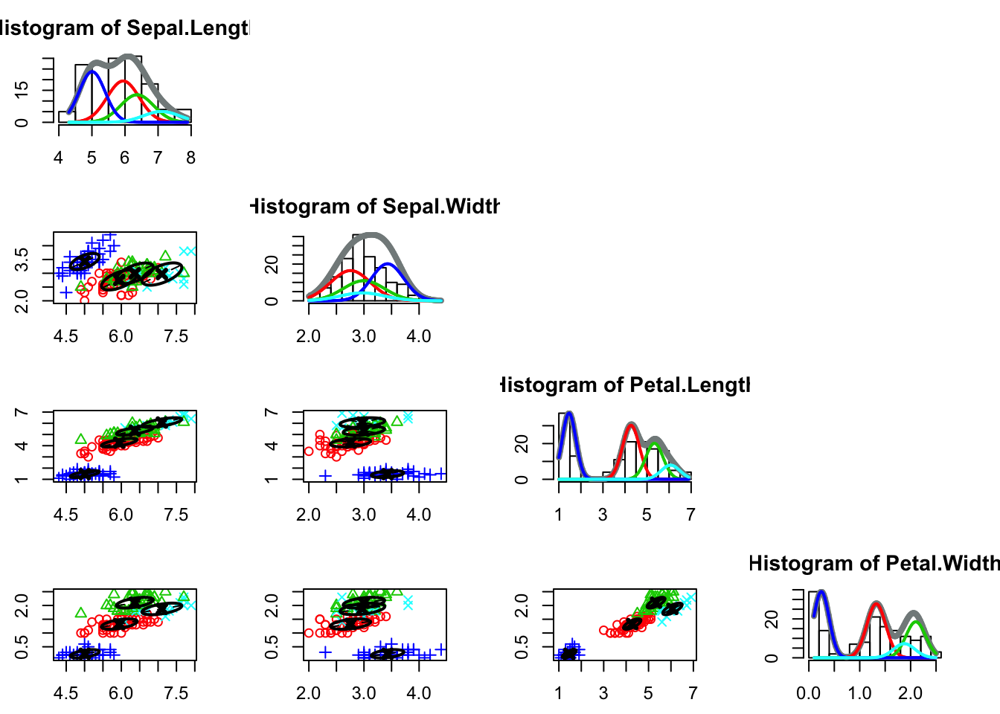
hist(mixmodICL)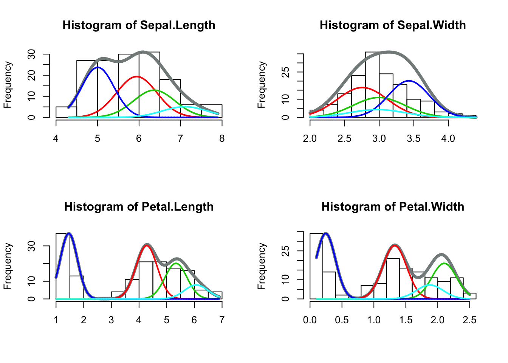
If you want to test more models, you can use the mixmodGaussianModel() function to list them.
mixmodGaussianModel()## ****************************************
## *** MIXMOD Models:
## * list = Gaussian_pk_L_I Gaussian_pk_Lk_I Gaussian_pk_L_B Gaussian_pk_Lk_B Gaussian_pk_L_Bk Gaussian_pk_Lk_Bk Gaussian_pk_L_C Gaussian_pk_Lk_C Gaussian_pk_L_D_Ak_D Gaussian_pk_Lk_D_Ak_D Gaussian_pk_L_Dk_A_Dk Gaussian_pk_Lk_Dk_A_Dk Gaussian_pk_L_Ck Gaussian_pk_Lk_Ck Gaussian_p_L_I Gaussian_p_Lk_I Gaussian_p_L_B Gaussian_p_Lk_B Gaussian_p_L_Bk Gaussian_p_Lk_Bk Gaussian_p_L_C Gaussian_p_Lk_C Gaussian_p_L_D_Ak_D Gaussian_p_Lk_D_Ak_D Gaussian_p_L_Dk_A_Dk Gaussian_p_Lk_Dk_A_Dk Gaussian_p_L_Ck Gaussian_p_Lk_Ck
## * This list includes models with free and equal proportions.
## ****************************************mixmodGaussianModel(family = "general")## ****************************************
## *** MIXMOD Models:
## * list = Gaussian_pk_L_C Gaussian_pk_Lk_C Gaussian_pk_L_D_Ak_D Gaussian_pk_Lk_D_Ak_D Gaussian_pk_L_Dk_A_Dk Gaussian_pk_Lk_Dk_A_Dk Gaussian_pk_L_Ck Gaussian_pk_Lk_Ck Gaussian_p_L_C Gaussian_p_Lk_C Gaussian_p_L_D_Ak_D Gaussian_p_Lk_D_Ak_D Gaussian_p_L_Dk_A_Dk Gaussian_p_Lk_Dk_A_Dk Gaussian_p_L_Ck Gaussian_p_Lk_Ck
## * This list includes models with free and equal proportions.
## ****************************************mixmodGaussianModel(family = "spherical",
free.proportions = FALSE)## ****************************************
## *** MIXMOD Models:
## * list = Gaussian_p_L_I Gaussian_p_Lk_I
## * This list includes only models with equal proportions.
## ****************************************Then, we test all the gaussian models. We also change the initialization strategy. By default, mixmodCluster() use a \(smallEM\), from 50 random starts. We decide here to test \(EM\) with 20 random initialization.
mixmodAll = mixmodCluster(
iris[-5], 1:9,
criterion = c("BIC", "ICL", "NEC"),
models = mixmodGaussianModel(),
strategy = mixmodStrategy(algo = "EM",
initMethod = "random",
nbTry = 20))
temp = sapply(attr(mixmodAll, "results"), function(mod) {
K = attr(mod, "nbCluster")
BIC = attr(mod, "criterionValue")[1]
ICL = attr(mod, "criterionValue")[2]
NEC = attr(mod, "criterionValue")[3]
model = attr(mod, "model")
return (c(K = K, model = model, BIC = BIC, ICL = ICL, NEC = NEC))
})
mixmodCriterion = transform(
data.frame(t(temp), stringsAsFactors = FALSE),
BIC = as.numeric(BIC),
ICL = as.numeric(ICL),
NEC = as.numeric(ICL))
ggplot(mixmodCriterion, aes(K, model, fill = BIC)) + geom_bin2d()ggplot(mixmodCriterion, aes(K, BIC, color = model)) +
stat_summary(aes(group = model), fun.y = mean, geom = "line")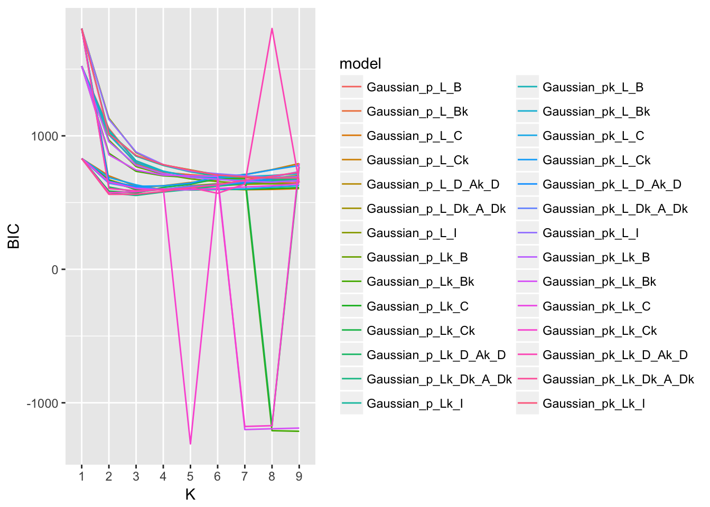
ggplot(mixmodCriterion, aes(K, model, fill = ICL)) + geom_bin2d()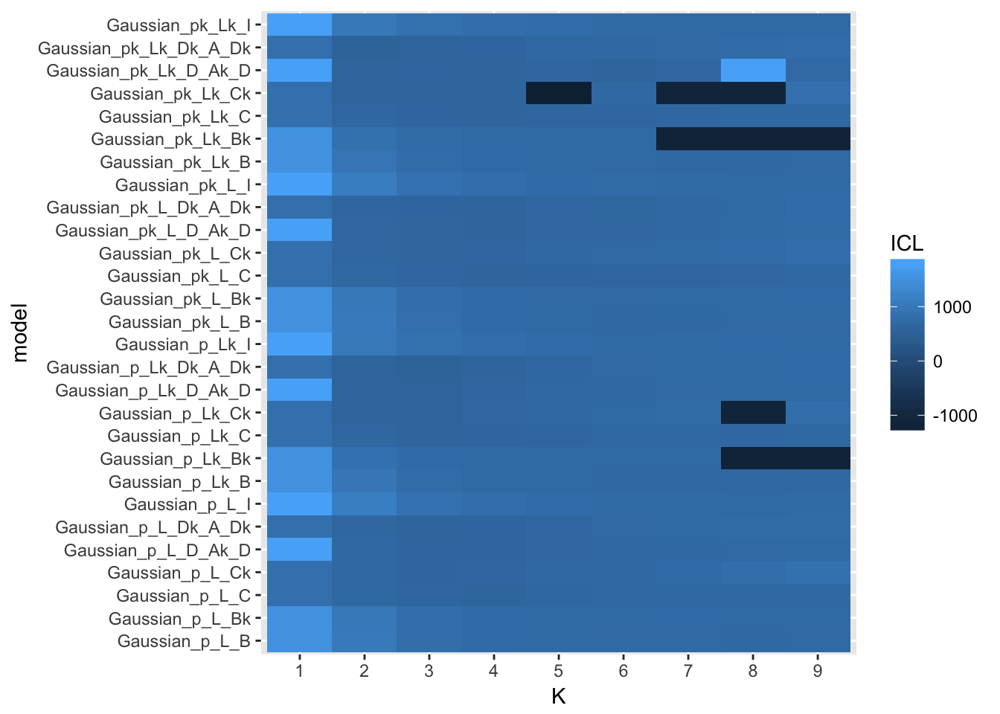
ggplot(mixmodCriterion, aes(K, ICL, color = model)) +
stat_summary(aes(group = model), fun.y = mean, geom = "line")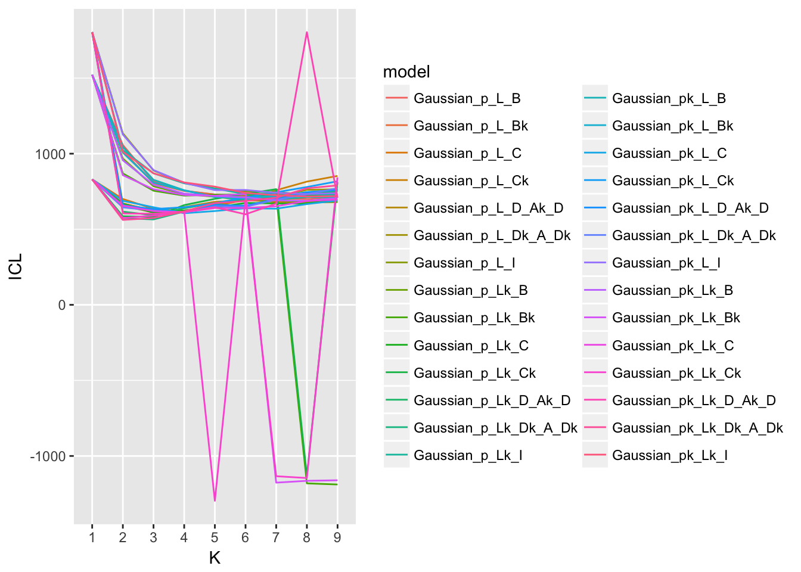
ggplot(mixmodCriterion, aes(K, model, fill = NEC)) + geom_bin2d()ggplot(mixmodCriterion, aes(K, NEC, color = model)) +
stat_summary(aes(group = model), fun.y = mean, geom = "line")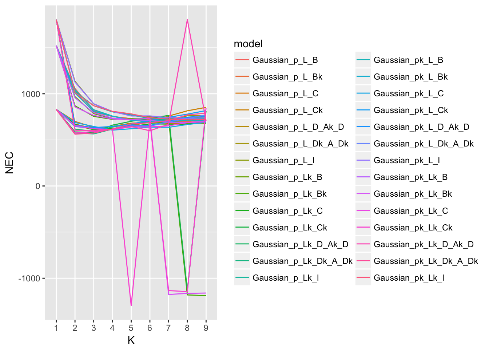
Some work
Finally, we want to use these methods to search a good number of clusters for each digit in the pendigits data.